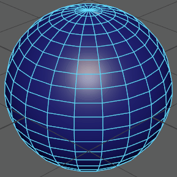
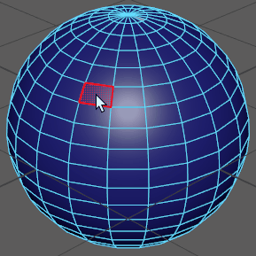
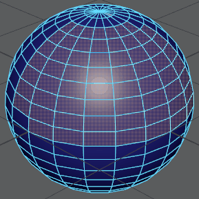
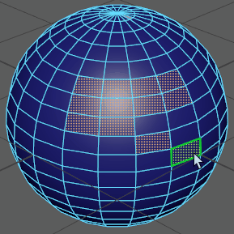

扩大多边形组件或 NURBS CV 的选择
- 选择组件或 CV。
- 使用“选择 > 增长”(Select > Grow)进行展开，也可以按住 Shift + .（句点）进行展开。
注： 扩大选择后，会将其展开至其相邻组件（即：与所选组件接触的组件）。

此外，还可以按住
Shift 键并单击以选择多个部分。请注意，光标将变为
+（加号）以表明多个选择处于活动状态。

收缩多边形组件或 NURBS CV 的选择
- 选择组件或 CV。
- 使用“选择 > 收缩”(Select > Shrink)。
注： 收缩选择后，将减去所选组件的外环。

此外，还可以按住
Ctrl 键并单击以取消选择各个部分。光标将变为
-（减号）以表明单个取消选择处于活动状态。
